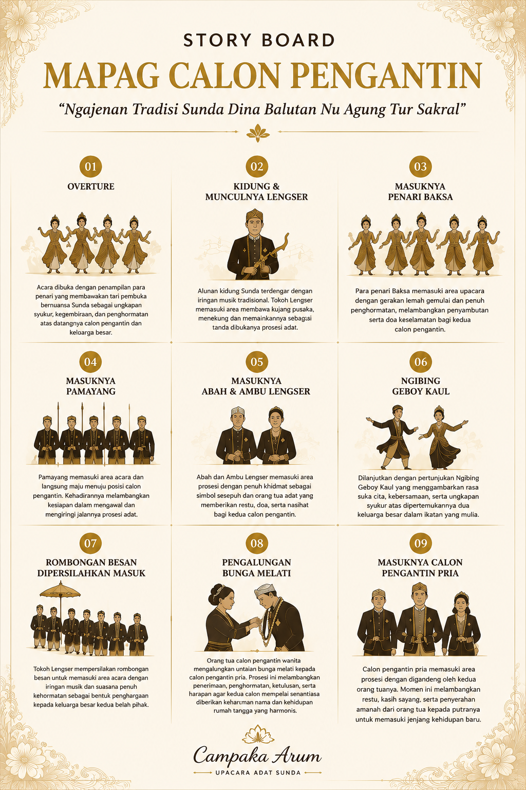
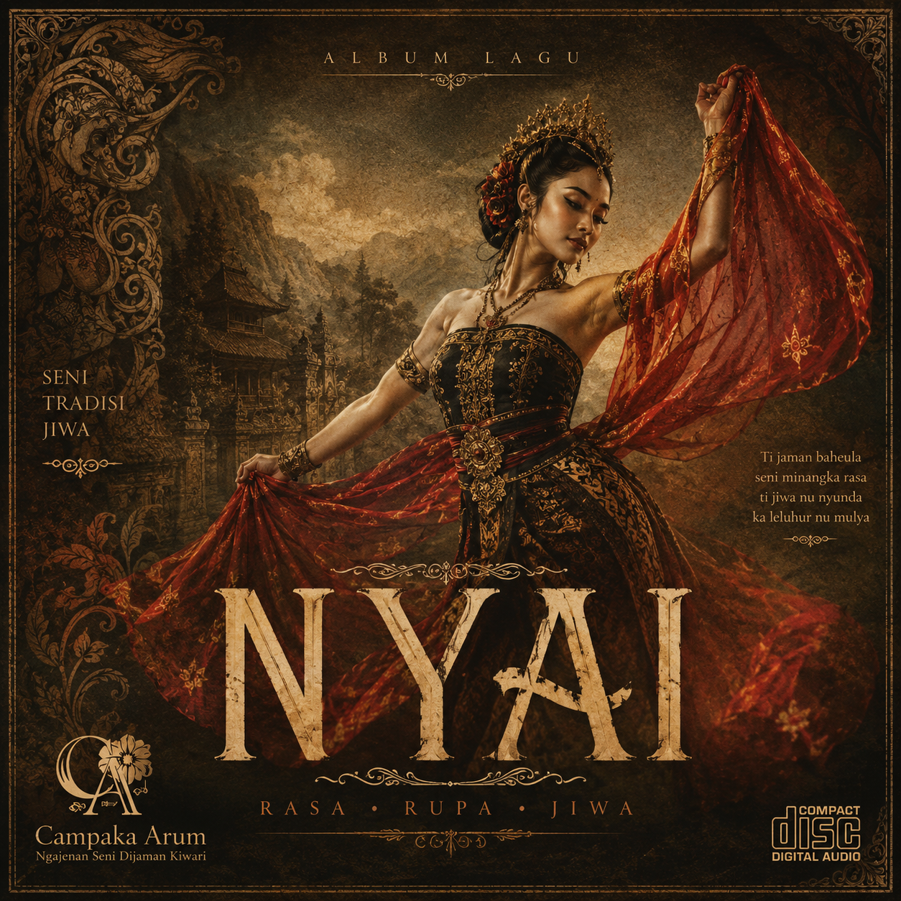
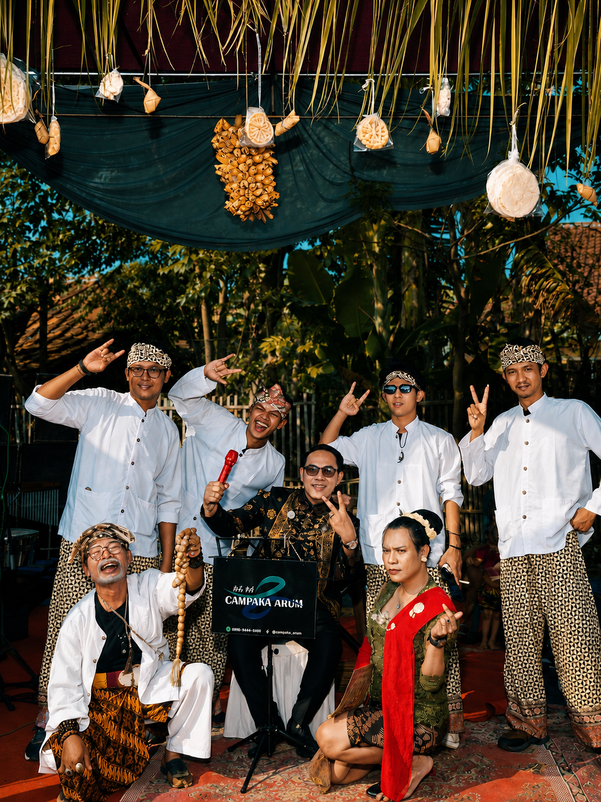
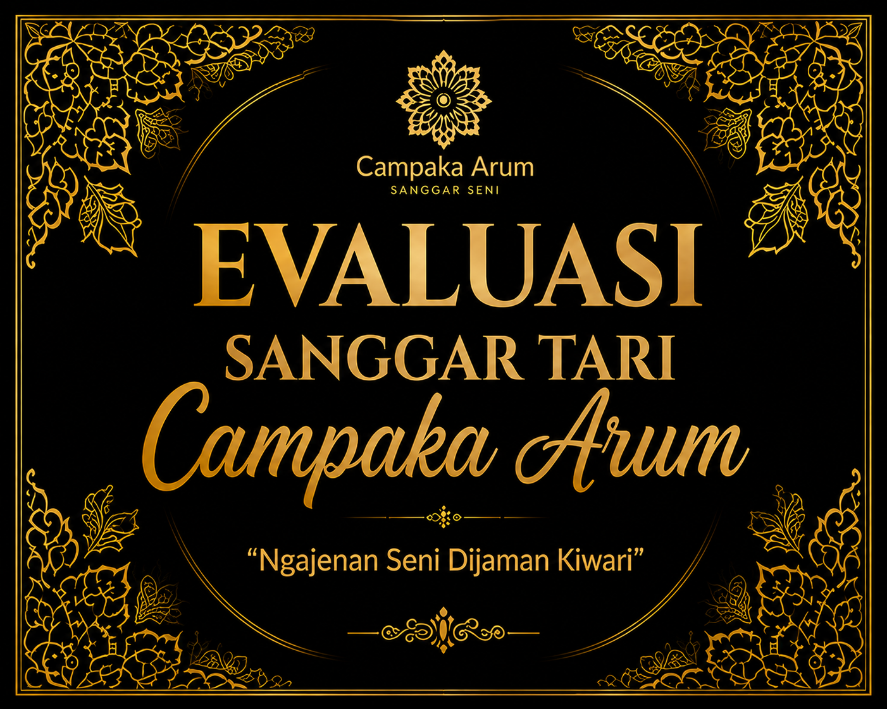
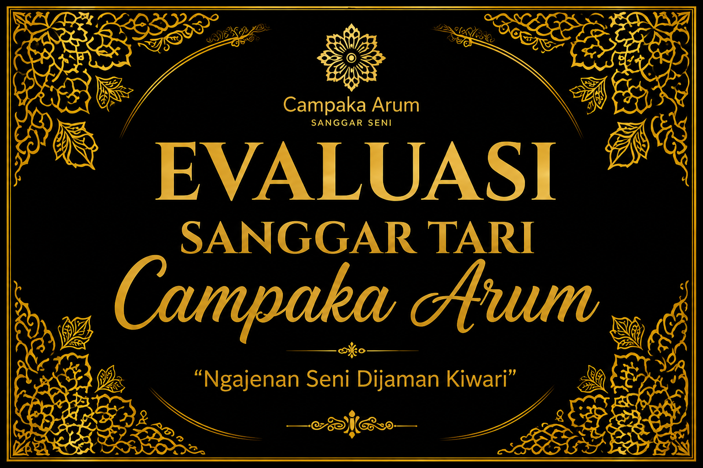

Tari Tradisi Sunda
Latihan tari Sunda dan pengembangan koreografi.
SANGGAR SENI CAMPAKA ARUM
Wadah belajar, melestarikan, dan mengembangkan seni tradisi Sunda dengan semangat generasi masa kini.
TENTANG KAMI
Mengenalkan seni tradisi Sunda kepada generasi muda secara kreatif dan berkelanjutan.
Latihan terarah untuk membangun teknik, karakter, disiplin, dan rasa percaya diri.
Menjadi ruang bagi peserta untuk tampil, berkreasi, dan mengembangkan potensi seni.
PROGRAM
Latihan tari Sunda dan pengembangan koreografi.
Pelatihan dan pertunjukan berbagai bentuk seni upacara adat.
Persiapan penampilan untuk acara budaya, sekolah, dan masyarakat.
Evaluasi berkala untuk mengukur perkembangan kemampuan peserta.
GALERI





Galeri menggunakan beberapa karya/foto yang pernah Anda upload sebelumnya. Tambahkan foto baru ke folder assets lalu masukkan ke galeri di index.html.
HUBUNGI KAMI
Sanggar Seni Campaka Arum
Jl. H. Mian, Dusun Caplek RT/RW 002
Desa Lemahkarya, Tempuran, Karawang, 41385